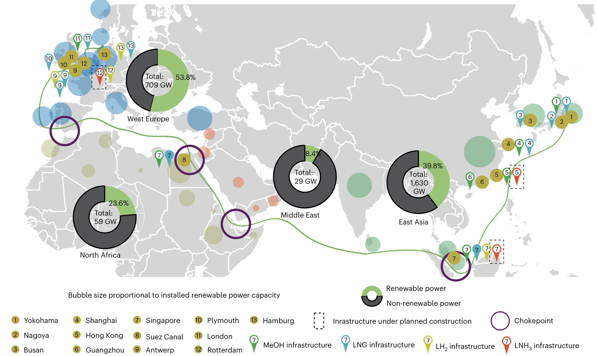
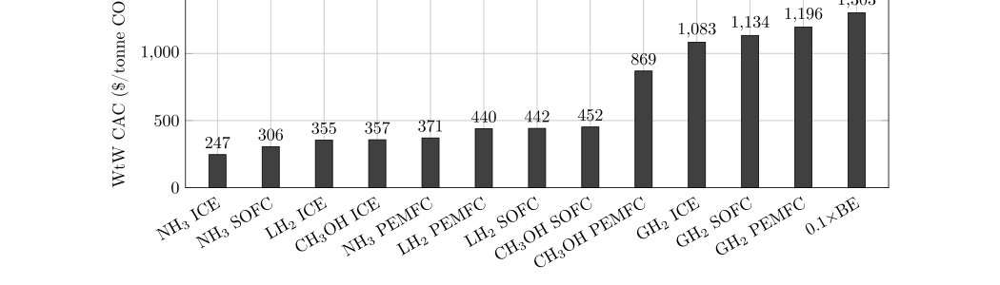

图源：Li et al. (2026)亚欧绿色航运走廊的燃料转型
从政策执行、燃料成本到船舶与港口工程约束，解读分阶段燃料转型。
 Abyssal Mind
Abyssal Mind

图源：Li et al. (2026)从政策执行、燃料成本到船舶与港口工程约束，解读分阶段燃料转型。

绿氨的成本优势是否经得起 N₂O 排放、后处理和能源价格的检验？
政策、港口和燃料供应商开始从单点示范转向跨节点协作。
行业信号：比较燃料价格时，运营稳定性同样需要被量化。